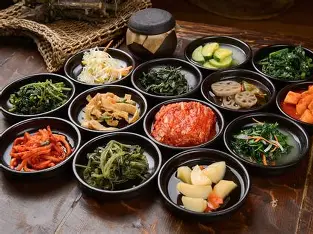
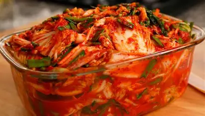
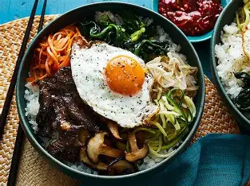

A culinária da Coreia do Sul é conhecida pela grande variedade de sabores, ingredientes e técnicas de preparo, sendo considerada uma das mais tradicionais da Ásia.
O arroz é a base da alimentação e geralmente é servido com diversos acompanhamentos chamados banchan, que incluem vegetais, legumes, carnes e alimentos fermentados.
Entre eles, o kimchi se destaca como o prato mais famoso do país.
Feito principalmente de acelga fermentada com pimenta e outros temperos, ele está presente em quase todas as refeições e representa uma parte importante da cultura coreana.
Além do kimchi, pratos como o bibimbap, que combina arroz, legumes, carne e ovo, e o bulgogi, preparado com carne marinada e grelhada, são muito populares dentro e fora da Coreia.
Outro prato bastante apreciado é o samgyeopsal, no qual fatias de carne suína são grelhadas na própria mesa e consumidas com folhas de alface e diferentes molhos.
Sopas e ensopados também têm papel importante na alimentação diária, especialmente durante os meses mais frios.
Os pratos coreanos utilizam ingredientes marcantes, como alho, gengibre, molho de soja, óleo de gergelim e a pasta de pimenta chamada gochujang, que dá sabor e intensidade às receitas.
Mais do que simplesmente alimentar, a culinária sul-coreana valoriza a convivência e o compartilhamento dos alimentos, tornando as refeições momentos de interação social e preservação das tradições culturais do país.


